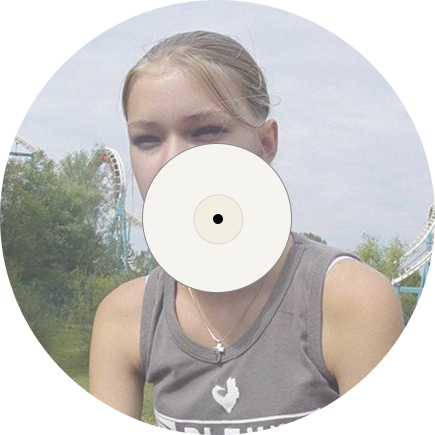
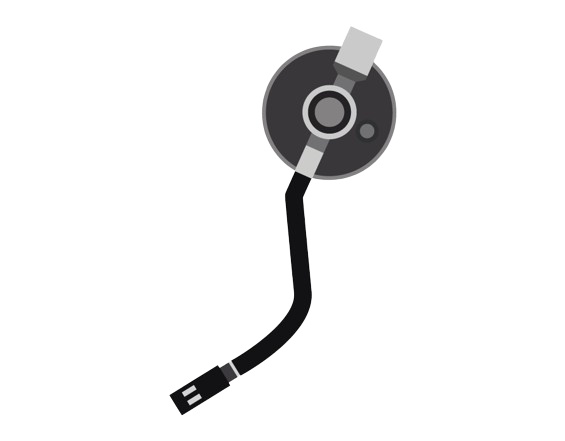

하늘에 연기 연기
이제 몇 까치 없지
지금 먹고 싶은 게 뭔지
시계방향으로 돌지
난 크리스피 크림 도넛
난 맥날 치즈버거
난 동네 빵집 소보로
난 그냥 집밥이
이 모든 게 있을 때까진 모름
우리 텐트에 모기들이 놀러 옴
날 막아줬던 벽의 힘이 놀라워
이젠 아무것도 없어 옆에 애들 빼면
I f__ked it up
I f__ked it up for so long
너무 내 멋대로
I f__ked it up
I f__ked it up for so long
너무 커진 어깨로
그 어깨로 이 돌도 못 들면서
너무 내 멋대로
고작 몇 킬로 걷지도 못하면서
I feel so f__king dark tonight
여덟시 반 쯤에 또 다시 어둠이
180짜리 곤충 나의 발은 더듬이
작아진 나에 비해서 너무 커진 숲의 볼륨
신은 fader를 올려 듣다 보니 입을 다물지 Low key
난 향수병 자꾸 한숨 뿌려
I smell old trees
자꾸 어제와 마주쳐
도시에 무너진 건물
I guess I’m humble
나의 옆에 전부들은 나의 전우
I f__ked it up
I f__ked it up for so long
너무 내 멋대로
I f__ked it up
I f__ked it up for so long
너무 커진 어깨로
그 어깨로 이 돌도 못 들면서
너무 내 멋대로
고작 몇 킬로 걷지도 못하면서
I feel so f__king dark tonight
Beenzino - Camp

